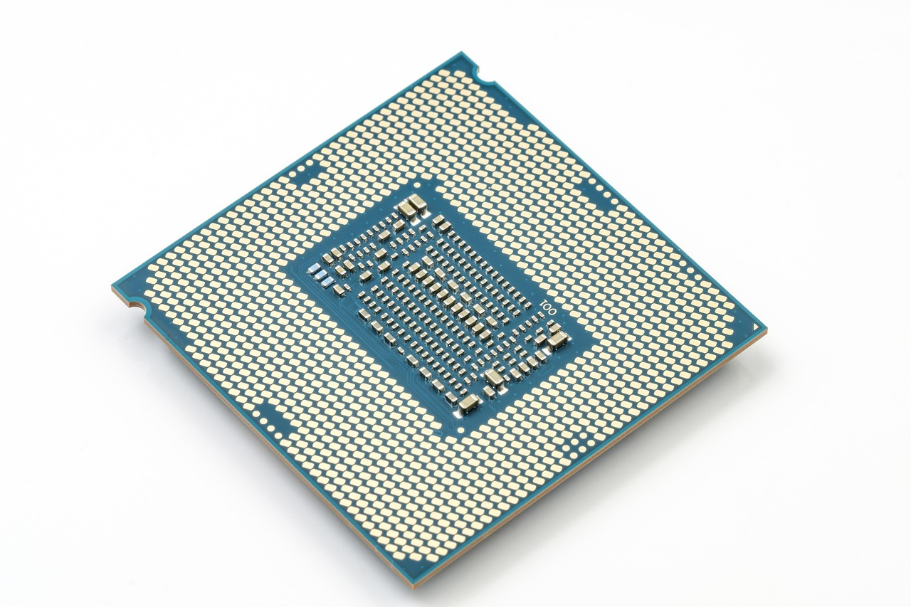

AI 반도체 설계 재사용, 공정 검증 과제

인공지능(AI)으로 기존 반도체 설계를 수정하는 작업에서 실제 제조공정에 적용할 수 있는지를 확인하는 문제가 드러나고 있다. 설계안을 빠르게 만드는 것과 생산 가능한 반도체로 구현하는 것 사이에 검증 단계가 남아 있다는 것이다. 공정·장비 업체가 보유한 데이터까지 연결해야 한다는 점에서 설계 자동화는 제조 생태계와도 맞닿아 있다.
반도체 전문매체 세미컨덕터 엔지니어링(Semiconductor Engineering)은 11월 24일 보도에서 AI를 파생 제품과 신규 칩 설계에 적용한 결과가 엇갈리고 있다고 전했다. AI가 제안한 변경안이 기존 설계와 크게 달라지거나 예상보다 비용이 높아질 수 있고, 제조와 검증 과정에 새로운 확인 항목을 만들기도 한다는 내용이다.
기존 설계의 재사용은 이미 개발한 회로와 설계자산(IP)을 다음 제품에 활용하는 방식이다. 매번 모든 부분을 새로 만드는 부담을 줄이고 개발기간과 일회성 개발비를 분산하는 데 목적이 있다. 여기에 AI 에이전트를 적용하면 기존 구조와 회로 기술을 분석해 병목을 찾거나, 변경안을 탐색하고 설계 도구의 설정을 조정하는 작업을 자동화할 수 있다.
다만 재사용에 필요한 정보가 설계 기업 내부에 모두 모여 있는 것은 아니다. 보도에 따르면 일부 데이터는 위탁생산 업체인 파운드리, 외주 조립·시험 업체(OSAT), 장비 및 공정 공급업체에 나뉘어 있다. 후속 제품이 예상대로 작동할지를 판단하려면 정확한 설계 데이터와 공학적 지식, 검증된 방법론이 함께 필요하다.
키사이트(Keysight)의 전자설계자동화 사업을 담당하는 나일시 캄다르(Nilesh Kamdar)는 해당 매체에 주파수 조건을 바꾸는 필터 설계 사례를 설명했다. 기존 회로를 점진적으로 수정하는 대신 AI가 격자 형태의 구성요소를 바꿔 다른 해법을 만들 수 있다는 것이다. 기능상 동작하더라도 제조 가능성과 비용 적합성을 별도로 확인해야 한다고 지적했다.
문제는 변경 전후 설계의 연결성이 약해질 수 있다는 점이다. 엔지니어는 기존 회로가 작동하는 이유를 바탕으로 새로운 조건에 맞춰 수정하지만, AI가 전혀 다른 구성을 제시하면 이전에 쌓은 이해를 그대로 적용하기 어렵다. 따라서 제안된 회로가 물리적으로 성립하고 제조할 수 있는지, 비용 목표와 새 제품의 요구조건을 충족하는지를 사람이 판단해야 한다.
퀄컴(Qualcomm)의 바지즈 아슈르(Baaziz Achour) 최고기술책임자는 해당 보도에서 자동차용 솔루션을 로봇 분야로 확장한 경험을 소개했다. 인지와 경로 계획, 센서 융합 등 공통 기능이 있어 소프트웨어는 효과적으로 확장했지만, 하드웨어 IP의 규모 조정과 시스템온칩 통합에는 여전히 상당한 인력이 필요했다고 설명했다.
같은 기능 블록을 사용해도 제품별 요구조건은 달라진다. 보도에서 아슈르는 카메라와 디스플레이 관련 기본 블록이 비슷하더라도 카메라 개수, 처리속도, 전력 조건은 서로 다르다고 짚었다. 공통 IP를 활용하는 것만으로 제품 구현 비용이 사라지지는 않으며, 처리 코어와 주변 기능을 각 제품의 성능·원가 조건에 맞게 통합해야 한다는 설명이다.
기존 설계 도구와 AI를 연결하는 과정도 과제로 제시됐다. 기업마다 특정 칩과 시장에 맞춰 도구를 바꿔 사용해 왔고, 결과의 예측 가능성과 추적성, 실제 반도체에서 검증된 결과를 요구한다. AI 기술이 빠르게 바뀌더라도 이런 조건을 기존 작업 절차에 반영해야 하며, 다중 물리현상 해석과 구현·검증의 공백도 전체 자동화를 제한하고 있다.
세미컨덕터 엔지니어링에 따르면 아슈르는 회로 기술이나 칩 내부 배치를 바꾸지 않은 상태에서 설계 도구의 설정을 조정하는 데 3개월이 걸린 사례도 제시했다. 도구 설정의 반복 조정은 자동화를 적용할 후보 작업이지만, AI를 활용한 미세 조정에도 많은 연산 자원이 든다는 설명이다. 보도는 자동화할 단계와 범위를 업계가 계속 탐색하고 있다고 전했다.